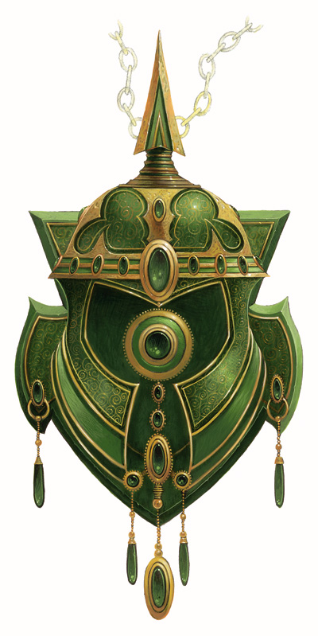

城市之神—乌班纳斯（Urbanus）
弱等神力（中立善良）
乌班纳斯是人类最新崇拜的神灵之一，城市之神。
有一天，在自己的梦乡中，城市规划者们开始看到一个奇怪的轮廓，一个皮肤如同砖石头和各种石材与木材的男人，眼睛像窗户，带着像建筑物屋顶建筑物样的头盔。此人向他们展示了设计新的建筑设计，新的街道，一个完全崭新的城市布局。当每个城市规划者醒来的时候，他们回想起了梦中的每一个细节。
后来，城市规划者们分享了他们的梦，他们充满敬畏的认识到他们每个人的梦是相同的。城市的规划者们把这座按照新的设计规划建立的城市，奉献给了这个陌生的访客从那时起，乌班纳斯出现在每一次人类大型的移民，殖民，开拓活动中。他在主导这些事务的公民梦乡中访问，鼓励他们改善和扩大城市。
他在城市上空观望着，保护他们和他们的居民。 乌班纳斯常以严肃，富有魅力的中年人类男性外貌出现。他的皮肤是由砖石和石头等建材构成。他的眼睛是窗户。他的牙齿是铺路石。他的头盔（或者是他的头发）是一个圆顶的尖顶。当他说话时，他的声音听起来像货车车轮滚动与教堂的钟声和水泵的混合音。
乌班纳斯是最近才出现的一个神祇，并且神力的管辖范围有限，他在城市外没有权力。不管怎样在城市里，他的意志是至高无上的。虽然主要是一位人类神祇，乌班纳斯却接受住在城市里任何人的敬奉。
神职：城市（Cities），发展（Growth）, 进步（Improvement）。
领域：城市（City）（见本书162页），善良（Good），知识（Knowledge），保护（Protection）
神职人员训练: 乌班纳斯在他所选的牧师们梦乡里显现自己。他选择那些居住在城市里，热爱自己的城市，思考并让自己的城市变更安全，更整洁和更适宜居住的人们。乌班纳斯将这些人选为他的牧师，并教导他们熟悉这座城市的每一寸角落并告诉他们如何充分欣赏它。他的追随者都是专家级导游，他们往往带着游客参观城市里每个地方。
任务: 乌班纳斯相信城市需要发展，但并不总是需要发展的越来越大。有时候，他们需要摧毁城市内潜伏中的邪恶，或是整修破败弯曲的街道与维修老旧建筑。他的追随者往往参与其中恢复老城区的活力，他们还帮助组织关照邻里间关系。
祷告:乌班纳斯的祷告在城市美丽的中心部分进行。他的崇拜者用提到城市里心爱的地点或其组成要素的方式来吸引他的注意力，并赢得了他的关爱。
神殿: 乌班纳斯神殿大部分在城市的主要地点，市政府，主桥，前门等等地标部分。小型匾牌附着到在这些位置，让他的的信徒们知道这些匾牌所在处就是他的圣地。没有必要的话整座城市都是他的神殿。
仪式: 在乌班纳斯辖下建立的新建筑物，规划建立新城区部分的会议，以及任何其它重大的，在城区范围内的举行的和平集会。他的仪式简短而富有诗意，往往是具有本城市一些元素的原始诗歌或歌曲。
神使和同盟: 乌班纳斯的神使是一名魁伟的铁魔像（Iron Golem），他的位面同盟是肉身魔像（Flesh），黏土魔像（Clay），铁魔像（Iron Golem）（他派遣各种魔像来响应异界誓盟系列法术）.
偏好武器：重型硬头锤（Heavy mace）
附录：
城市领域（City Domain）
神祇：渥利达马拉、Urbanus（见第18页）
获得力量：将搜集信息与知识（地方）加入牧师的本职技能里。
城市领域法术
1. 跃步楼顶 （Rooftop Strider）：让你能轻易在不平坦的表面上行走。
2. 城楼之光 (City Light)：吸收周围的光线转换成眩目的火光。
3. 迷绕径巷 (Winding Alleys)：将敌人困在幻术迷宫里。
4. 觉晓城市 (Commune With City)：获得与城市的情报。
5. 畅行诸面 (Skyline Runner)：你能在城市里的任何平面上如常行走。
6. 城市跳越 (City Stride)：在两个城市之间进行传送。
7. 城市护盾( Urban Shield)：城市会掩护你，而不是掩护敌人。
8. 城市力量 (City Might)：力量与体质得到加强，并得到伤害缩减，只能在城市里。
9. 活化城市 (Animate City)：城市的构成物开始攻击并缓慢敌人。